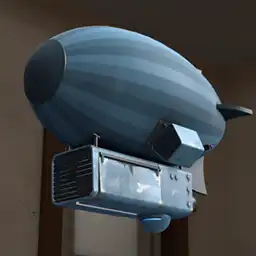
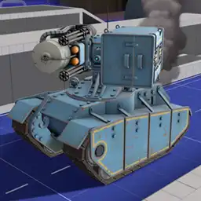
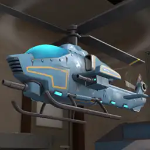
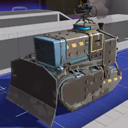

IF YOU ARE PLANNING TO PACK THESE SCRIPTS INTO YOUR MAP THEN READ THE Usage For Mappers SECTION.
To add any of these custom tanks to your mission you first need to include the main script and any tank scripts of your choosing. This can be done through a RunScriptCode output on bignet or added to your own mission script file if you have one.
// This example loads the main script, two optional tank scripts, and two other scripts for one of the tanks // You can include as many tank scripts as needed InitWaveOutput { Target bignet Action RunScriptCode Param "IncludeScript(`tankextensions_main`, getroottable()) IncludeScript(`tankextensions/combattank`, getroottable()) IncludeScript(`tankextensions/combattank_weapons/minigun`, getroottable()) IncludeScript(`tankextensions/combattank_weapons/rocketpod`, getroottable()) IncludeScript(`tankextensions/tankdozer`, getroottable())" }
Once the scripts are included, set the Name keyvalue of any tank in your popfile to one that the scripts provide.
Tank { Name "combattank|minigun|rocketpod" Health 30000 Speed 75 StartingPathTrackNode "tank_path_1" OnBombDroppedOutput { Target boss_deploy_relay Action Trigger } }
All custom tanks and information on what can be put into the Name keyvalue are in the Tank Types section.
Other functionalities such as creating tank paths or setting tank icons can be found in the example popfile. Tank names and script functions are listed further down the documentation. If you want to make a new tank type yourself then refer to the example tank script.
If you plan to pack these scripts into your map so its missions can use custom tanks then pack the MAP SPECIFIC SCRIPTS instead of packing the main scripts. This is done so if the map were to be used on other servers that use a more updated version of TankExtensions then there would be no conflicts between the server's file and the map's file (packed map scripts always override server scripts).
With the map scripts packed in you will want to make your own script file that loads the main script and tank scripts. Use a logic_script entity to load up your created script file. Do not use this entity to load the tank scripts directly or else the tank scripts will not function. The example below shows what the contents of your created script file could look like.
// Example script file path "scripts/vscripts/mymapname.nut" // logic_script's "Entity Scripts" should be set to that new script's name ("mymapname") // This example loads the packed main script, two optional tank scripts, and two other scripts for one of the tanks // You can include as many tank scripts as needed IncludeScript("tankextensions_main_packed", getroottable()) IncludeScript("tankextensions_packed/combattank", getroottable()) IncludeScript("tankextensions_packed/combattank_weapons/minigun", getroottable()) IncludeScript("tankextensions_packed/combattank_weapons/rocketpod", getroottable()) IncludeScript("tankextensions_packed/tankdozer", getroottable())
The people who write the missions will not have to use the InitWaveOutput block to load the tank scripts that are already loaded by the map's script file and just have to name their tank according to the loaded tank scripts.
For scripters working on the map, TankExtensions's custom functions will use a TankExtPacked prefix instead of TankExt

Path Maker allows for quickly creating paths without the need for going around the map using getpos or opening the hammer editor.
If tankextensions_main is loaded, Path Maker can be started using this command: ent_fire !activator runscriptcode "TankExt.PathMaker(self)". Replace ent_fire with sm_ent_fire if on a testing.potato.tf server.


The table below provides details on what can go into a tank's Name keyvalue. You should first know the following formatting required to modify the listed tank types.

Tank Combiner lets a single tank use multiple tank scripts at once. Separate the individual tank names with ^. A tank script with a defined keyvalue such as its model will override the same keyvalue from any other tank script to its right (painttank|255 127 0^redtank will only use the painttank model and not the redtank model).
Suffixes are optionally appended to the tank's name for different effects. tankName + _suffix1 + _suffix2 = tankName_suffix1_suffix2.
Parameters are separated by | and can modify certain aspects of the tank type. A tank with 2 parameters can be written as tankboss|parameter1|parameter2
Quick Keyvalues allow for making slight modifications on how a tank spawns. The start of a keyvalue list is denoted with $, the values of the keys are separated with |, and each keyvalue is separated with ^.
| Keyvalue | Description |
|---|---|
color |
Colors the tank, treads, and bomb mechanism. "255 127 0" would result in an orange tank.
|
disablebomb |
Set to 1 to only hide the bomb mechanism. |
disablechildmodels |
Set to 1 to hide the tank's tracks and bomb mechanism. |
disableoutline |
Set to 1 to hide the tank's outline that is normally visible through walls. |
disablesmokestack |
Set to 1 to hide the tank's smokestack. |
disabletracks |
Set to 1 to only hide the tank's tracks. |
engineloopsound |
Accepts a sound path string to replace the tank's looping sound. Normally this sound is for the rumbling of the engine and the movement of the tank tracks. |
model |
Accepts a model path string that replaces the body of the tank. |
nodestructionmodel |
Set to 1 to hide the tank's explosion animation. Does not get rid of the explosion particle. |
noscreenshake |
Set to 1 to disable the screenshake effect that occurs when standing near the tank. |
pingsound |
Accepts a sound path string to replace the tank's ping noise that occurs every 5 seconds. |
scale |
Sets the tank's model scale value. |
teamnum |
Sets the tank's team value. 2 is for red, 3 is for blue. |
ScriptFunctions are not part of a tank's name but they can be ran by firing a CallScriptFunction input on the tank with the param being the script function name.
// You can use a dummy wavespawn to call these script functions in vanilla WaveSpawn { WaitForAllDead "w4b" FirstSpawnOutput { Target "ubertank|-1|-1" Action CallScriptFunction Param "ToggleUber" } }
| Script File | Tank Names | Suffixes | Parameters | ScriptFunctions | Description | |||||||||||
|---|---|---|---|---|---|---|---|---|---|---|---|---|---|---|---|---|
| bannertank.nut |
bannertank
|
|
AddBannerBackup AddBannerBuff AddBannerConch RemoveBannerBackup RemoveBannerBuff RemoveBannerConch |
Applies the selected banner effects to all teammates within a 540hu radius. The tank by default will also gain these same effects, you can disable them using the |
||||||||||||
|  | blimp.nut |
blimp
|
|
|
Same as a normal tank but it traverses the sky. First parameter sets the color of the blimp, can be left blank to use team colors. The Blimp model by Glitch and ZoraKirby |
|||||||||||
| chewchewtank.nut |
chewchewtank
|
Li'l Chew Chew from pl_frontier but in tank form. Each bite deals 1000 damage and does not effect giants. |
||||||||||||||
|  | combattank.nut |
combattank
|
|
|
ToggleUber |
Weaponized tank. This comes with its own script files for each weapon within scripts/vscripts/tankextensions/combattank_weapons/. Load those scripts like you would with tanks; the weapon names go into either of the tank's parameters.
This tank has an optional bomb attachment, by default the tank will not spawn with a bomb mechanism for use with looping paths. The Tank and weapon models by Charlie |
||||||||||
| drilltank.nut |
drilltank
|
Adds a big drill to the front of the tank. Deals 50 damage to the victim every 0.33 seconds (150 dps) which apply bleed and 75% movement stun for 1 second. Deals no damage while in the bomb deploy sequence. Drill model by KrazyZark |
||||||||||||||
| exampletank.nut |
exampletank
|
This tank serves no purpose other than to show the basics in making a tank type. |
||||||||||||||
| fireringtank.nut |
fireringtank
|
Every 0.5 seconds a ring of fire will emit from the tank which ignite enemies. Concept by Bazooks |
||||||||||||||
| frontlinecart.nut |
frontlinecart
|
_crit
|
|
Small mobile turret that shoot a chosen projectile at 5 angles. Allows 2 parameters of: Cart model from the Frontline Supply Drop |
||||||||||||
| gatetank.nut |
gatetank
|
|
Allows the tank to capture gates when it reaches the specified path names. There can be as many parameters as needed and the inputted path names will find a gate trigger that is closest to the path_track. Tank model by Diva Dan |
|||||||||||||
| hammertank.nut |
hammertank
|
Adds a giant Necro Smasher onto the tank. Activates when an enemy is within a 256hu radius from its smashing position. Deals 2500 damage to enemies within a 128hu radius or pushes enemies away within a 384hu radius upon smashing. Has a 2.6 second cooldown after smashing. Concept from Sntr's Lost Valley |
||||||||||||||
|  | helicopter.nut |
helicopter
|
_crit
_customparticles
|
|
Traverses the sky (like a blimp), aims and shoots rockets at enemies (like a combattank), shoots a burst of stickies at enemies (like a stickytank), and can deploy the bomb (like a tank). The Inspired by Royal's Dover 2 mission |
|||||||||||
| jumptank.nut |
jumptank
|
Jump |
Causes the tank to jump high in the air periodically. When the tank is falling it will crush enemies beneath it, instantly killing them. When landing it will push enemies away. Set |
|||||||||||||
| painttank.nut |
painttank
|
|
A tank model that allows for more colors much like adding paints for hats. First parameter is the color. (i.e. Tank model by CTriggerHurt |
|||||||||||||
| paratank.nut |
paratank
|
Adds a parachute to the tank. If there's no floor underneath the tank then it will move towards path nodes similarly to a blimp until there's ground again. This will usually require a custom tank path so the tank's descent doesn't look unnatural. Parachute model from PenolAkushari's Silent Sky |
||||||||||||||
| redtank.nut |
redtank
|
Changes the tanks team to red and swaps the tank model with a red textured version. Useful when combined with other tank types that don't have custom models. Tank model by lite |
||||||||||||||
| scaletank.nut |
scaletank
|
|
Tank will resize itself as its health gets lower. First parameter is the resulting scale when at low health. |
|||||||||||||
| sentrytank.nut |
sentrytank
|
Adds an invincible level 3 sentry ontop of the tank. The sentries cannot attack enemies that are directly beside the tank. Sappers destroy themselves after 8 seconds if placed on either of the sentries, Red-Tape Recorder does not degrade their levels. Can heal allies in a large radius similar to a level 3 dispenser. Tank model by Diva Dan |
||||||||||||||
| speedtank.nut |
speedtank
|
|
Tank will alter its speed as its health gets lower. First parameter is the resulting speed when at low health. Tank model and particles by Diva Dan |
|||||||||||||
| stickytank.nut |
stickytank
|
Fires a barrage of non-crit and crit stickies in front of the tank. Stickies detonate 6.5 seconds after the tank began firing. |
||||||||||||||
|  | tankdozer.nut |
tankdozer
|
_nosentry
|
An armored tank with a 6000hp level 2 sentry ontop, can only be damaged by shooting the non-armored areas. Players will be crushed by the tanks scoop when they come in contact with it. Sappers destroy themselves after 10 seconds when placed but deal extra damage to the sentry. (500 health across 10 seconds) Concept from Sntr's Rust Valley |
||||||||||||
| targetank.nut |
targetanktargetank_color
|
Charges similarly to demo's shields. The tank slows down to 15hu/s on the first 2 seconds then speeds up to 300hu/s for 3 seconds. Has a recharge duration of 10 seconds. Hitting an enemy deals 75 damage and high knockback. Concept by PDA Expert |
||||||||||||||
| teletank.nut |
teletank
|
Places a fake teleporter ontop of the tank that teleport spawned bots with the |
||||||||||||||
| ubertank.nut |
ubertank
|
|
ToggleUber |
Has the ability to become invulnerable for a defined amount of time. First parameter is the amount of time after spawning until the tank becomes ubered and the second parameter is the duration of the uber. Setting either parameter to -1 will disable that parameter's functionality. Tank model by lite |
||||||||||||
| vactank.nut |
vactank
|
_bullet_blast_fire |
Adds any combination of the Vaccinator's uber effects to the tank. Adding a suffix will resist the chosen damage type. |

This section only serves a purpose for people who are very familiar with working on vscript files.
Always prepend TankExt. to any of these functions when using them. (i.e NewTankType() becomes TankExt.NewTankType())
| Function | Signature | Description | ||||||||||||||||||||||||||||||||
|---|---|---|---|---|---|---|---|---|---|---|---|---|---|---|---|---|---|---|---|---|---|---|---|---|---|---|---|---|---|---|---|---|---|---|
AddTankIcon |
void AddTankIcon(integer tankCount, string tankIcon, string tankName, integer index = null) |
Adds a custom tank icon to the wavebar. The tank name parameter accepts wildcards. | ||||||||||||||||||||||||||||||||
AddThinkToEnt |
void AddThinkToEnt(handle entity, string FuncName) |
Wrapper for AddThinkToEnt. If the entity is a tank then it will add the think function to its think table. If PopExt+ is loaded then it will use the renamed native function.
|
||||||||||||||||||||||||||||||||
ApplyTankTableByName |
void ApplyTankTableByName(handle tank, handle path, string tankType) |
Looks for a tank type that matches the inputted tank's name then applies what is given by the table. | ||||||||||||||||||||||||||||||||
ApplyTankType |
void ApplyTankType(handle tank) |
Called by any path_track entity. First checks for any quick keyvalues, then runs ApplyTankTableByName.
|
||||||||||||||||||||||||||||||||
ApproachAngle |
float ApproachAngle(float target, float input, float speed) |
Rotates the inputted value by the speed value towards the target value. The returned angle value is normalized.
From the TF2 VScript Examples page |
||||||||||||||||||||||||||||||||
Clamp |
float Clamp(float input, float low, float high) |
If the input is below the low value, returns the low value. If above the high value, returns the high value. | ||||||||||||||||||||||||||||||||
CreateLoopPaths |
void CreateLoopPaths(handle table) |
Similar to CreatePaths except it can make paths loop forever. The last node of each path must use the same position as a previously defined node.
|
||||||||||||||||||||||||||||||||
CreatePaths |
void CreatePaths(handle table) |
Can create multiple paths. | ||||||||||||||||||||||||||||||||
DelayFunction |
void DelayFunction(handle entity, handle scope, float delay, handle function) |
Delays a function and calls it after the specified time. If an entity is defined then it will use its ScriptScope and can only call when the entity exists. The used scope can be overriden by the second parameter. The first two parameters can be left null if neither are needed. | ||||||||||||||||||||||||||||||||
DispatchParticleEffectOn |
void DispatchParticleEffectOn(handle entity, string name, string attachment = null) |
Spawns a particle and attaches it to the entity. Can be placed on a model's attachment if defined. | ||||||||||||||||||||||||||||||||
ExtraTankKeyValues |
void ExtraTankKeyValues(handle tank, handle path, handle table) |
Used by ApplyTankType and ApplyTankTableByName to implement the keyvalue functions listed in NewTankType.
|
||||||||||||||||||||||||||||||||
GetMultiScopeTable |
handle GetMultiScopeTable(handle scope, string tankType) |
Returns the scope of a tank type within its MultiScope table. Returns null instead if MultiScope doesn't exist or if the name isn't in the MultiScope
|
||||||||||||||||||||||||||||||||
HasTankPathOutput |
bool HasTankPathOutput(handle path) |
Returns true if the entity has TankExtensions's required path output. This is used automatically and never needs to be used manually. | ||||||||||||||||||||||||||||||||
IntersectionBoxBox |
bool IntersectionBoxBox(Vector origin1, Vector mins1, Vector maxs1, Vector origin2, Vector mins2, Vector maxs2) |
Returns true if the first bounding box intersects with the second bounding box. | ||||||||||||||||||||||||||||||||
IterateIcons |
void IterateIcons(handle callback) |
Allows for easier reading and writing of the wavebar icon netprops. The inputted function needs 4 parameters (iIndex, sNames, sCounts, sFlags). Returning true will break the loop.
|
||||||||||||||||||||||||||||||||
IsPlayerStealthedOrDisguised |
bool IsPlayerStealthedOrDisguised(handle player) |
Returns true if the player is fully cloaked or has a disguise except when burning, jarated, or bleeding. Always returns false if the entity is not a player. | ||||||||||||||||||||||||||||||||
NewTankType |
void NewTankType(string name, handle table) |
Adds the inputted table with the specified name to the TankScripts or TankScriptsWild table which get ran when a tank with a matching name spawns.
List of Keyvalues
|
||||||||||||||||||||||||||||||||
NormalizeAngle |
float NormalizeAngle(float angle) |
Converts an angle value to be within the usual boundaries of an angle. The physical angle will not change. -180 < x ≤ 180
From the TF2 VScript Examples page |
||||||||||||||||||||||||||||||||
PathMaker |
void PathMaker(handle player) |
Outputs paths for CreatePaths or CreateLoopPaths to console. Read the Path Maker section above for more info.
|
||||||||||||||||||||||||||||||||
PrecacheParticle |
void PrecacheParticle(string name) |
Precaches a particle. This is only useful if a particle isn't precached when using DispatchParticleEffect or DispatchParticleEffectOn
|
||||||||||||||||||||||||||||||||
PrecacheSound |
void PrecacheSound(string soundName) |
Wrapper for PrecacheSound. Detects if the sound is a file or a soundscript.
|
||||||||||||||||||||||||||||||||
SetDestroyCallback |
void SetDestroyCallback(handle entity, handle callback) |
When the inputted entity dies, calls the inputted function.
From the TF2 Script Functions page |
||||||||||||||||||||||||||||||||
SetEntityColor |
void SetEntityColor(handle entity, int r, int g, int b, int a) |
Sets the entity's color and alpha. Alternatively, use a color/alpha input via AcceptInput to achieve the same effect.
From the SDK VScript Examples page |
||||||||||||||||||||||||||||||||
SetParentArray |
void SetParentArray(handle arrayChildren, handle parent, string attachment = null) |
All the entities listed in the array will be parented to the defined parent. Can be parented to one of the parent's attachments if defined. | ||||||||||||||||||||||||||||||||
SetPathConnection |
void SetPathConnection(handle path1, handle path2, handle pathAlt = null) |
Connects the first path_track to the second path_track. Optionally adds an alternative, toggleable path_track to the first path_track. | ||||||||||||||||||||||||||||||||
SetTankColor |
void SetTankColor(handle tank, string rgb) |
Colors the tank, treads, and bomb mechanism. "255 127 0" would result in an orange tank.
|
||||||||||||||||||||||||||||||||
SetTankModel |
void SetTankModel(handle tank, handle model) |
Accepts a single model path string or a table of multiple model path strings. The keyvalues for the table are: Tank, LeftTrack, RightTrack, Bomb.
|
||||||||||||||||||||||||||||||||
SetValueOverrides |
void SetValueOverrides(handle table) |
Overrides any values that are allowed to be customized within the available tank types. | ||||||||||||||||||||||||||||||||
SpawnEntityFromTableFast |
void SpawnEntityFromTableFast(string classname, handle keyvalues) |
Experimental function to spawn entities without a perf warning. Has only been tested on entities with a model. | ||||||||||||||||||||||||||||||||
VectorAngles |
QAngle VectorAngles(Vector input) |
Converts the Vector to a QAngle. The QAngle is the angle towards the Vector.
From the TF2 VScript Examples page |